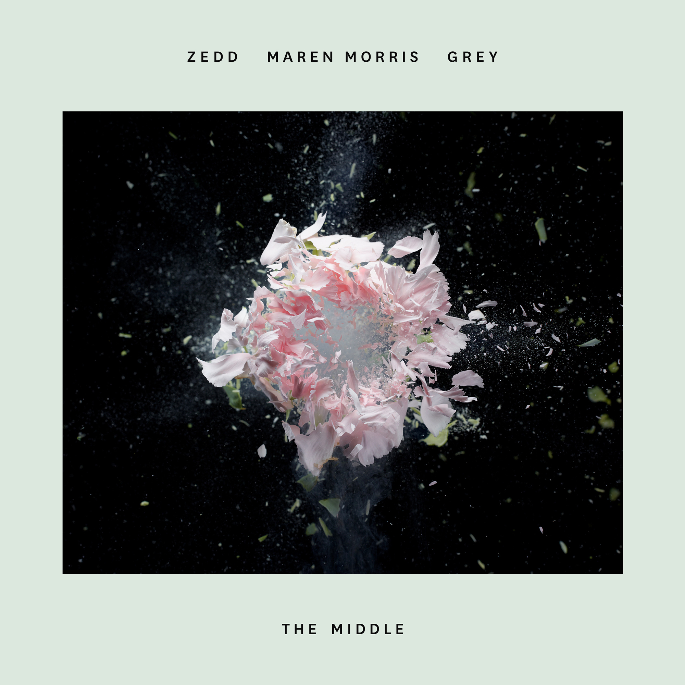

<doctype html>
<html>
<head>
<meta charset="utf-8">
<title>The Middle</title>
<link rel="stylesheet" type="text/css" href="../css/main.css">
<link rel="stylesheet" type="text/css" href="../css/banner.css">
<link rel="stylesheet" type="text/css" href="../css/bg.css">


</head>
<body marginheight="0" marginwidth="0" bgcolor="white" class="bg" id="body">
	
<!--header-->
<DIV CLASS="h">
<div class="header w">
	
<!--logo-->
<div class="logo"></div>
<!--nav-->
<div class="nav">
<ul>
	<li><a href="../index.html">Home</a></li>
    <li><a href="../html/zzROCK.html">Rock</a></li>
    <li><a href="../html/zzPOP.html">Pop</a></li>
    <li><a href="../html/zzLIGHT.html">Light</a></li>
	<li><a href="../html/zzFOLK.html">Folk</a></li>
    <li><a href="../html/About us.html">About us</a></li>
</div>
	
<!--searcher-->
<div class="searcher">
	<input type="text" id="search" value="请输入关键词" 
        onfocus="if(value=='请输入关键词')value=''"
        onblur="if(!value)value='请输入关键词'" 
        name="keyword">
	<button></button>
</div>
	
<!--user-->
<div class="user">油辣子</div>
</div>
</div>
<!--layer-->
<div class="LLlayer4">
	<div class="boxtop">
    </div>
    
    <div class="mmain bg">
       <div class="boxleft">
       <br><br><br><span class="span1">专辑</span><br>
      
       	<br>
		<span class="span1">《The Middle》</span>	
       </div>
       
       
       
       
       
       <div class="boxright">
       <hr size="1" noshade color="#666666" width="95%">    
       <font face="楷体" color="#999999" size="+6"><span>《The Middle》</span></font><br>
<hr size="1" noshade color="#666666" width="95%">
      
<br><br>
<textarea cols="40" rows="29.5" disabled readonly>
作词 : Anton Zaslavski/Kyle Trewartha/Michael Trewartha/Sarah Aarons/Stefan Johnson/Marcus Lomax/Jordan K. Johnson
作曲 : Anton Zaslavski/Kyle Trewartha/Michael Trewartha/Sarah Aarons/Stefan Johnson/Marcus Lomax/Jordan K. Johnson
Take a seat
坐下来冷静一下
Right over there
坐在那里
Sat on the stairs
坐在门口的台阶上
 
Stay or leave
想清楚是走还是留
The cabinets are bare
衣橱空空如也
And I'm unaware
我未曾察觉
 
Of just how we got,
我们的感情
into this mess
何时变得一团糟
Got so aggressive
变成争锋相对
 
I know we meant
我深知我们对彼此
All good intentions
都是出于好意
 
So pull me closer
所以靠近我吧
Why don't you pull me close
为何你不敢靠近我多一点
Why don't you come on over
为何你不过来我身边
I can't just let you go
我不能这么轻易放你走
 
Baby
亲爱的
Why don't you just meet me in the middle
你为何不愿意做出一点让步
I'm losing my mind just a little
我快要被逼疯了
So why don't you just meet me in the middle
所以你为何不能稍微做出点让步
In the middle
做出点妥协
 
Baby
亲爱的
Why don't you just meet me in the middle
你为何不愿意做出一点让步
I'm losing my mind just a little
我快要被逼疯了
So why don't you just meet me in the middle
所以你为何不能稍微做出点让步
In the middle
做出点妥协
 
Take a step
让我们后退一步
Back for a minute
回到数分钟之前
Into the kitchen
回到争吵的厨房
 
Floors are wet
地面湿漉漉
Taps are still running
水龙头肆意流淌
Dishes are broken
盘子摔得破碎不堪
 
How did we get,
不知为何我们的感情
into this mess
变得一团糟
Got so aggressive
变成争锋相对
 
I know we meant
我深知我们对彼此
All good intentions
都是出于好意
 
So pull me closer
所以靠近我吧
Why don't you pull me close
为何你不敢靠近我多一点
Why don't you come on over
为何你不过来我身边
I can't just let you go
我不能这么轻易放你走
 
Baby
亲爱的
Why don't you just meet me in the middle
你为何不愿意做出一点让步
I'm losing my mind just a little
我快要被逼疯了
So why don't you just meet me in the middle
所以你为何不能稍微做出点让步
In the middle
做出点妥协
 
Looking at you I can't lie
面对你我说不了谎
Just pouring out admission
我承认自己有过错
Regardless my objection
我愿意忽略自己的感受
 
And it's not about my pride
这不关乎无谓的自尊
I need you on my skin just
我只需要你陪在我身边
Come over, pull me in just...
将我拥入你的怀中
 
Baby
亲爱的
Why don't you just meet me in the middle
你为何不愿意做出一点让步
I'm losing my mind just a little
我快要被逼疯了
So why don't you just meet me in the middle
所以你为何不能稍微做出点让步
In the middle
做出点妥协
 
Baby
亲爱的
Why don't you just meet me in the middle
你为何不愿意做出一点让步
I'm losing my mind just a little
我快要被逼疯了
So why don't you just meet me in the middle
所以你为何不能稍微做出点让步
In the middle
做出点妥协
 
Baby
亲爱的
Why don't you just meet me in the middle
你为何不愿意做出一点让步
I'm losing my mind just a little
我快要被逼疯了
So why don't you just meet me in the middle
所以你为何不能稍微做出点让步
In the middle
做出点妥协
</textarea>

		<div style="float:right; margin-left:20px">
        <span class="span1">Mv</span>
        <hr size="1" noshade color="#990000" width="45%">
 <video src="../media/The Middle.mp4" width="600px" controls></video>    
        </div>
        
       </div>
	</div>

</div>
	

<!--footer-->
<div class="footer">
	<div class="copyright">
    
    
    
    </div>
</div>

    <audio id="taichang">
    	<source src="../media/The Middle.mp3" type="audio/mp3">
    </audio>
<script>
	var taichang = document.getElementById("taichang");
	var icon = document.getElementById("icon");	
	
	icon.onclick = function(){
		if(taichang.paused){
		taichang.play();
		icon.src = "../images/暂停.png";
		}else{
			taichang.pause()
		icon.src = "../images/播放.png";
		}
	}
</script>
<script>
  let cw = 1920,ch = 1080
  let body = document.getElementById('body')
  body.style.width = `${cw}px`
  body.style.height = `${ch}px`

  function windowResize() {
    let w = window.innerWidth, h = window.innerHeight
    
    let r = w / cw < h / ch ? w / cw : h / ch

    body.style.transform = `scale( ${r})`
    body.style.marginLeft = (-(cw - r * cw) / 2 + (w - r * cw) / 2) + 'px'
    body.style.marginTop = (-(ch - r * ch) / 2 + (h - r * ch) / 2) + 'px'
    body.style.marginBottom = (-(h>ch?h:ch - r * ch)) + 'px'
    body.style.marginRight = (-(w>cw?w:cw - r * cw)) + 'px'
  }

</script>

</body>
</html>
